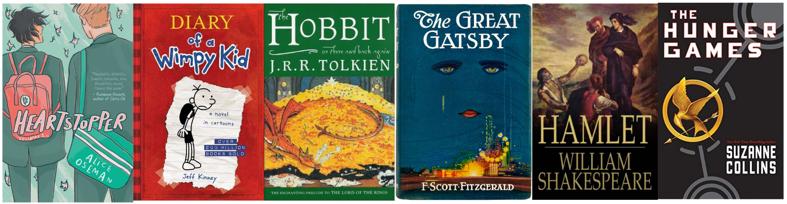

Here are the books I'm reading right now.
| What I'm Reading | |
| The Idiot by Elif Batuman | Loveless by Alice Oseman |
Here are some books I anticipate reading in the near future. As one can probably tell, my favorite genre is romantic young adult (YA) fiction. That used to embarrass me quite a bit. It still does—to an extent. I'm also a fan of science fiction, fantasy, and LGBTQ+ fiction.
| Future Reading List | |
| Love & Gelato by Jenna E. Welch | The Ten Thousand Doors of January by Alix E. Harrow |
| Solitaire by Alice Oseman | A Scatter of Light by Malinda Lo |
| Trials of Apollo: The Hidden Oracle by Rick Riordan | The Kane Chronicles: The Red Pyramid by Rick Riordan |
| Magnus Chase: The Sword of Summer by Rick Riordan | The Love Hypothesis by Ali Hazelwood |
| Radio Silence by Alice Oseman | A Thousand Heartbeats by Kiera Cass |
Here are some books I've read and given a (totally objective and non-biased) rating out of 5 stars. Are my ratings at least partially based on how pretty the cover art is? Well, yes.
| Book | Author | Rating |
| Percy Jackson: The Lightning Thief | Rick Riordan | ★★★★★ |
| Percy Jackson: Sea of Monsters | Rick Riordan | ★★★☆☆ |
| Percy Jackson: The Titan's Curse | Rick Riordan | ★★★★☆ |
| Percy Jackson: The Battle of the Labyrinth | Rick Riordan | ★★★★☆ |
| Percy Jackson: The Last Olympian | Rick Riordan | ★★★★★ |
| The Heroes of Olympus: The Lost Hero | Rick Riordan | ★★★☆☆ |
| The Heroes of Olympus: The Son of Neptune | Rick Riordan | ★★★★★ |
| The Heroes of Olympus: The Mark of Athena | Rick Riordan | ★★★★☆ |
| The Heroes of Olympus: The House of Hades | Rick Riordan | ★★★☆☆ |
| The Heroes of Olympus: The Blood of Olympus | Rick Riordan | ★★★☆☆ |